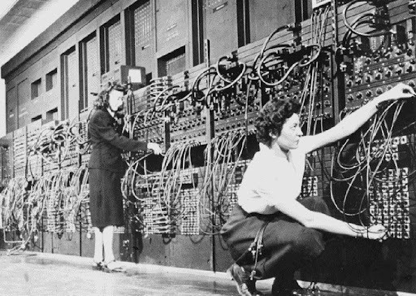
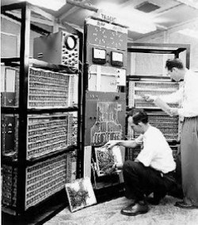

A EVOLUÇÃO DOS COMPUTADORES
No mundo todo, a tecnologia vem se tornando algo mais do que popular, onde as pessoas, em muitas das vezes, nem saem de casa porque conseguem resolver tudo com um celular ou computador com poucos cliques e segundos. Hoje em dia quase tudo está tecnológico (ou está se tornando). Claro que tudo o que está acontecendo não surgiu do dia para a noite porque tudo envolve um processo, até mesmo com a tecnologia e os computadores.
PRIMEIRA GERAÇÃO DE COMPUTADORES (1951-1959):
A primeira geração de computadores ficou marcada principalmente porque os primeiros computadores começaram a surgir e também eram compostos por válvulas. O computador que marcou essa época era chamado ENIAC, um computador extremamente gigante. Possui aparições em grandes filmes, tais como O Jogo da Imitação e Capitão América. A imagem abaixo demonstra o tamanho de um computador durante a primeira geração de computadores. Além disso, o trabalho para manuseá-lo era bem maior.
Foi um computador desenvolvido durante a Segunda Guerra Mundial e com a principal finalidade de realizar cálculos balísticos. O filme O Jogo da Imitação retrata muito essa finalidade, onde Alan Turing cria um modelo ENIAC para realizar cálculos para quebrar códigos nazistas criptografados.
SEGUNDA GERAÇÃO DE COMPUTADORES (1959-1965):
Sobre mudanças estéticas, os computadores da segunda geração não mudaram tanto se comparados aos da primeira geração, mas foram criados pequenos componentes para substituir as válvulas: os transistores. As válvulas eram grandes e bem lentas, mas os transistores eram pequenos e bem mais rápidos, o que tornou as máquinas mais eficientes e rápidas.
TERCEIRA GERAÇÃO DE COMPUTADORES (1965-1975)
Uma grande evolução começou a ocorrer na terceira geração de computadores. Nesta geração as máquinas já estavam funcionando por circuitos integrados, por isso os transistores, apresentados na geração anterior, foram substituídos. Os circuitos integrados apresentavam uma dimensão menor e maior capacidade de processamento. Os chips também foram criados e os primeiros computadores pessoais começaram a surgir no mercado, o que eliminou os imensos computadores anteriormente utilizados. Nesta geração destacaram-se duas máquinas: B3500 e B3600.

QUARTA GERAÇÃO DE COMPUTADORES (1975-dias atuais):
A fase mais avançada dos computadores ainda está acontecendo! As pessoas do mundo todo ainda estão presenciando tudo isso porque está em constante evolução, onde, em quase todos os dias, vemos algo novo. O Mark Zuckerberg, dono do Facebook, é exemplo disso. Olhando para tudo o que aconteceu, é de grande relevância os acontecimentos passados até o estágio atual. A praticidade e economia de tempo estão diretamente relacionados a tudo isso atualmente.
Gabriel Fernandes Feitosa